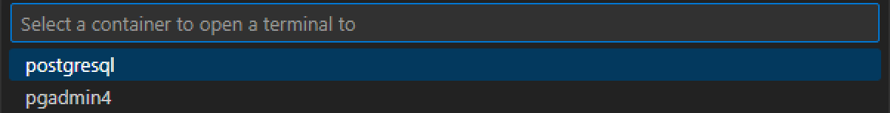
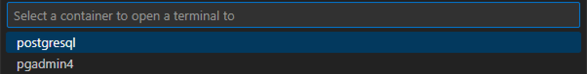
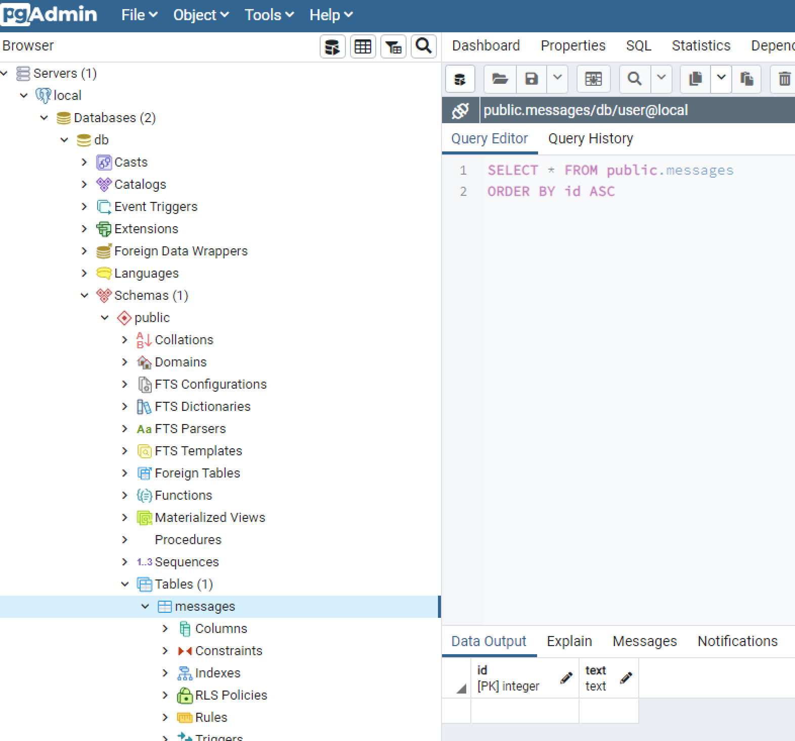
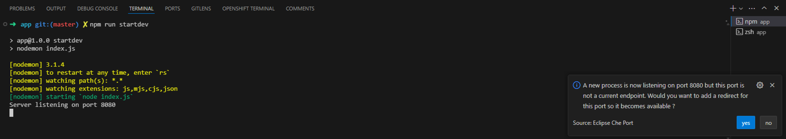
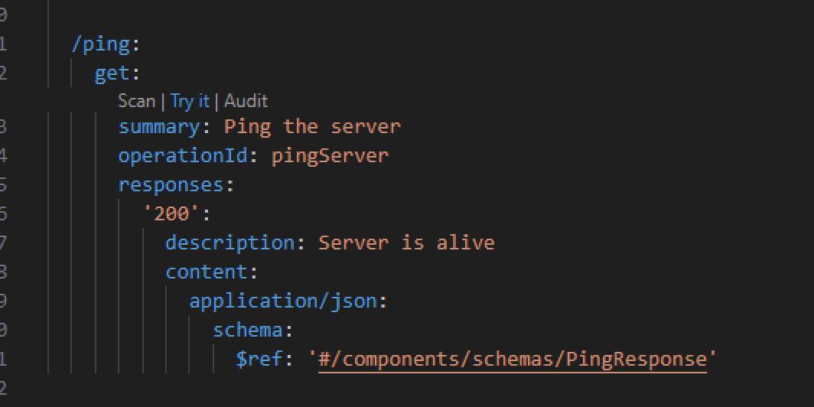
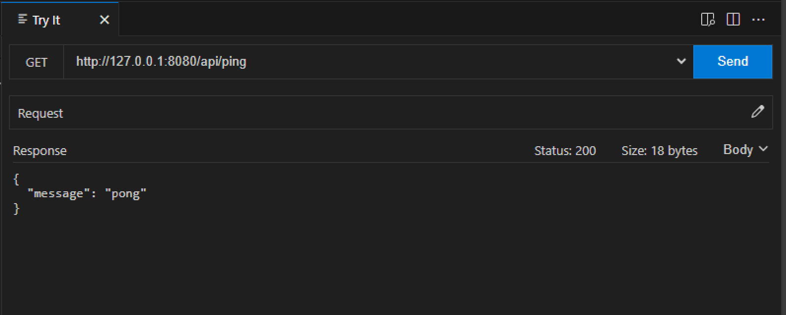
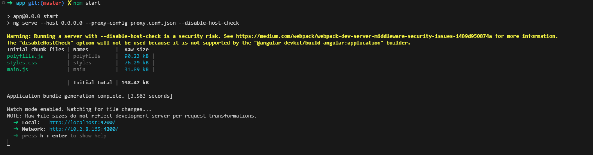
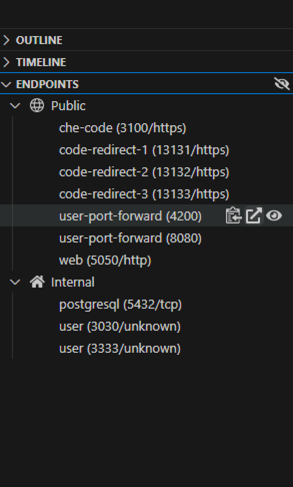

NodeJs Express API with Angular Client (using Material Design)
This project demonstrates a simple REST API built with Express NodeJS and a corresponding Angular client application. It leverages Material Design for a user-friendly interface.
Features
- API:
- Provides endpoints, check the openapi specification.
- Uses prepared statements for secure database interaction (assuming PostgreSQL).
- Angular Client:
- Fetches messages from the API and displays them in a list.
- Allows adding new messages.
- Implements ping functionality to check API health.
- Utilizes Material Design components for a visually appealing interface.
Launch the demo
Setup database
First time only
-
Open a new Terminal on the postgresql pod.
 
 -
In the terminal launch the following command to configure the database.
Password is:
pass
Output sample
- You can do the same with pgadmin which is running in your workspace, open a new terminal

Live Coding of the NodeJs server
- Launch
npm installto download all the necessary libs.
- The nodejs backend use
nodemonfor live coding, so simply launch the command to start the application.

Click Yes if you like to expose outside of the workspace.
- Under the
backend/appyou have the OpenApi specification and you can try directly the endpoint.


Live Coding of Frontend App
- Launch
npm installto download all the necessary libs.
- Launch
npm startto start the Live Coding.

Test the application
- From the endpoint section now you can access the frontend application.

- Click it and now you can acces the application.